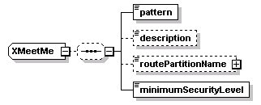
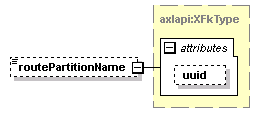

| diagram |  | ||
| namespace | http://www.cisco.com/AXL/API/10.5 | ||
| children | pattern description routePartitionName minimumSecurityLevel | ||
| used by |
|
||
| source | <xsd:complexType name="XMeetMe"> <xsd:sequence minOccurs="0"> <xsd:element name="pattern" type="xsd:string" nillable="false" minOccurs="1" maxOccurs="1"/> <xsd:element name="description" type="xsd:string" nillable="false" minOccurs="0" maxOccurs="1"/> <xsd:element name="routePartitionName" type="axlapi:XFkType" nillable="true" minOccurs="0" maxOccurs="1"/> <xsd:element name="minimumSecurityLevel" type="axlapi:XDeviceSecurityMode" nillable="true" minOccurs="1" maxOccurs="1"/> </xsd:sequence> </xsd:complexType> |
| diagram | |||||
| type | xsd:string | ||||
| properties |
|
||||
| source | <xsd:element name="pattern" type="xsd:string" nillable="false" minOccurs="1" maxOccurs="1"/> |
| diagram | |||||||||
| type | xsd:string | ||||||||
| properties |
|
||||||||
| source | <xsd:element name="description" type="xsd:string" nillable="false" minOccurs="0" maxOccurs="1"/> |
| diagram |  | ||||||||||||
| type | axlapi:XFkType | ||||||||||||
| properties |
|
||||||||||||
| attributes |
|
||||||||||||
| source | <xsd:element name="routePartitionName" type="axlapi:XFkType" nillable="true" minOccurs="0" maxOccurs="1"/> |
| diagram | |||||
| type | axlapi:XDeviceSecurityMode | ||||
| properties |
|
||||
| source | <xsd:element name="minimumSecurityLevel" type="axlapi:XDeviceSecurityMode" nillable="true" minOccurs="1" maxOccurs="1"/> |